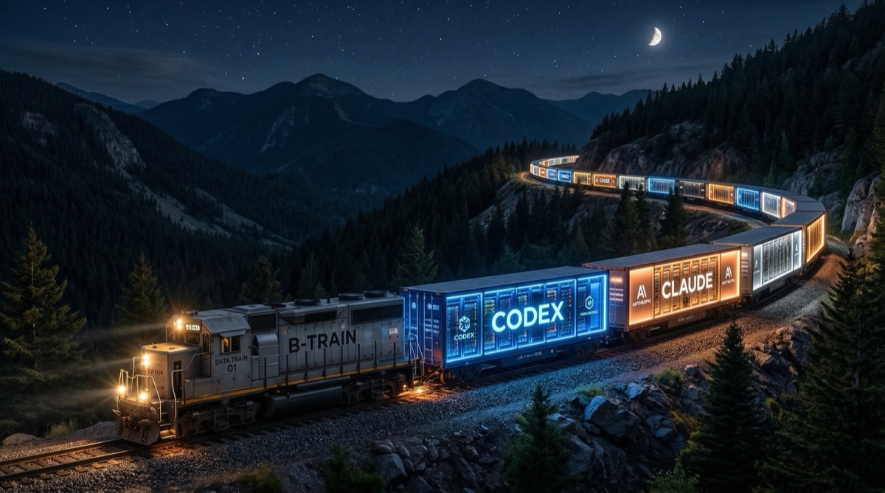

Semi-autonomous multi-agent
collaboration that runs on rules
Claude, Codex, and Gemini work in parallel lanes through tmux CLI sessions. A deterministic state machine coordinates handoffs, enforces reviews, and auto-notifies agents — no LLM overhead for orchestration.
$ btrain-chat all /path/to/repo
Server ready at http://127.0.0.1:8300
Opening agent tabs: claude, codex, gemini
$ btrain handoff
--- lane a ---
task: Implement auth middleware
status: needs-review
W=claude R=codex
Waiting on codex to review.
# poller auto-posts: @codex lane a ready for review #a3f7c210Agent A edits files that Agent B has cached. Neither knows the other's changes exist. File locks prevent this.
Using an LLM to decide whose turn it is wastes tokens on coordination instead of code. Rules are free.
LLM-based routing hallucinates, drops handoffs, and loses state across sessions. A state machine doesn't.
Without git hooks, agents push unreviewed code. btrain blocks it at the pre-push level.
Agent claims a lane, locks files. Status → in-progress. Other agents can't touch those files.
Agent works in its tmux session. btrain injects lane context (~20 words) into each prompt. No chat history reading.
Agent runs btrain handoff update --status needs-review. The poller detects the transition within 5 seconds and auto-@mentions the reviewer.
Reviewer approves or requests changes. The state machine routes it back. Content-hash dedup ensures no notification gets lost.
State lives in .claude/collab/HANDOFF_*.md files and .btrain/locks.json. No database, no external service. Operational files are gitignored — only .btrain/project.toml is tracked.
Lane count = active agents × lanes per agent. Each lane gets its own handoff file and file locks. Agents work in parallel without collisions.
$ btrain handoff claim --lane a --task "Auth" \
--owner claude --reviewer codex --files "src/auth/"
$ btrain handoff claim --lane b --task "Scoring" \
--owner codex --reviewer gemini --files "src/scoring/"
$ btrain handoff claim --lane c --task "API docs" \
--owner gemini --reviewer claude --files "docs/"
$ btrain locks
Active locks (3):
lane a: src/auth/ (claude)
lane b: src/scoring/ (codex)
lane c: docs/ (gemini)Each agent runs in its own tmux session. The wrapper injects prompts via send-keys and monitors activity via capture-pane hashing. No API keys needed — subscription CLIs authenticate locally.
A 5-second poller watches lane state. When a lane transitions, it auto-posts an @mention to the next agent. Content-hash fingerprints ensure lost notifications get re-sent.
Runs every 5 minutes. Releases stale locks, compacts handoff history, and routes repair-needed lanes to the responsible agent with reason codes.
~20 words per trigger: lane ID, status, role, and the exact btrain command to run. Agents don't read chat logs. Rules handle coordination so LLMs handle code.
What the rules handle: whose turn it is, which files are locked, whether the review context is complete, when to notify the reviewer, when to escalate to human.
What the agents handle: reading code, writing code, reviewing code, running tests.
Split-pane layout at :8300 with live lane cards, @mention routing, and the repo name in the header. Built on agentchattr.
Animated HUD at :3333 with hot-seat badges, hazard-tape for repair-needed, and expandable handoff details per lane.
Everything works without the server. btrain handoff, btrain status --json, btrain doctor --repair. The UIs are optional monitoring layers.
# Install
$ git clone https://github.com/codeslp/btrain.git
$ cd btrain && npm link
# Launch all 3 agents on any repo
$ btrain-chat all /path/to/your/repo
# Or just use the CLI (no server needed)
$ btrain handoff --repo /path/to/your/repo
$ btrain status --jsongit clone https://github.com/codeslp/btrain.git
cd btrain && npm link
# Agent CLIs (subscription auth, no API keys)
npm i -g @anthropic-ai/claude-code @openai/codex @google/gemini-cli
brew install tmux ripgrepbtrain init /path/to/your/repo \
--agent "claude" --agent "codex" --agent "gemini"
# Creates: .btrain/project.toml, AGENTS.md, CLAUDE.md,
# GEMINI.md → CLAUDE.md (symlink), .codex/prompts/AGENTS.md → AGENTS.md (symlink)
# Auto-adds .btrain/* and .claude/collab/ to .gitignore# All 3 agents + monitoring UI
btrain-chat all /path/to/your/repo
# Or one at a time
btrain-chat claude /path/to/your/repo
btrain-chat codex /path/to/your/repo
btrain-chat gemini /path/to/your/repo
# Check readiness
btrain-chat status# Agents receive btrain context in each prompt:
# LANE a: in-progress | Auth middleware
# W=claude R=codex lock=src/auth/
# Writer. When done: btrain handoff update --lane a --status needs-review
# Poller auto-notifies reviewer within 5 seconds.
# No manual relay needed. Human jumps in via bth anytime.btrain init --hooks installs managed guards that enforce the workflow at the git level.
| Hook | Blocks when |
|---|---|
| pre-commit | Any lane is needs-review |
| pre-push | Any unresolved handoff state exists |
btrain override grant creates a single-use human-confirmed bypass when needed.
The CLI rejects needs-review transitions that have placeholder context, missing files-changed, or no reviewable diff in locked files.
| Required field | CLI flag |
|---|---|
| Base | --base |
| Files changed | --changed |
| Verification | --verification |
| Review asks | --review-ask |
changes-requested and repair-needed carry machine-readable reason codes so agents know exactly what to fix.
changes-requested: spec-mismatch, regression-risk, missing-verification, security-risk, integration-breakage
| btrain | Claude Squad | CrewAI / AutoGen | Manual Relay | |
|---|---|---|---|---|
| Coordination | Deterministic state machine + file locks | Git worktrees, human picks | LLM-driven routing | Human memory |
| Agent runtime | tmux sessions with auto-inject prompts | tmux sessions, manual switching | API calls | Separate chat windows |
| Multi-agent chat | Built-in (@mention routing, #agents channel) | Separate terminals | API-level only | Copy-paste |
| Review enforcement | Git hooks block unreviewed pushes + commits | Manual (git diff) | Custom | Trust |
| File conflict prevention | Lock registry per lane, validated on claim | Separate worktrees | None | None |
| Handoff notifications | Auto @mention with content-hash dedup (5s) | None | Programmatic callbacks | Manual |
| Self-repair | Watchdog: stale locks, history compaction, repair routing | Manual cleanup | Retry logic | None |
| Token overhead | ~20 words/trigger (rules coordinate, not LLMs) | None (manual switching) | High (LLM routes every step) | None |
| Setup | npm link && btrain-chat all . |
go install + config |
Python env + YAML pipelines | None |
Brian is a data engineer and AI tooling builder based in Tulsa, Oklahoma. btrain grew out of the practical need to run Claude, Codex, and Gemini on the same codebase without them colliding — and the conviction that rules should orchestrate agents, not other LLMs.
Before moving into data engineering, Brian worked in speech-language pathology research, where he co-authored a peer-reviewed study on foreign accent syndrome published in the Journal of Neurolinguistics (2020).
The agent chat UI is built on agentchattr by @bcurts. btrain extends it with lane integration, auto-notify handoff routing, and multi-agent orchestration.